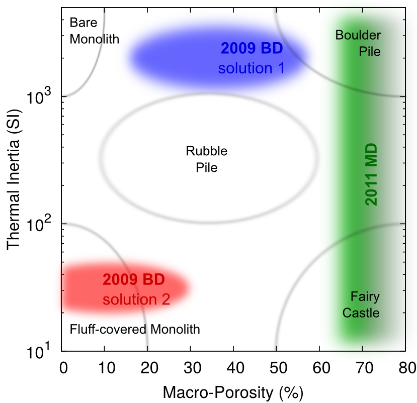

Little is known about the physical properties of the smallest NEOs with diameters of less than 10 meters. Due to their small sizes, they are usually very faint and hard to observe. Hence, only a small number of asteroids in this size regime are known and for only very few of those physical properties like diameter and albedo have been measured. However, small NEOs are much more frequent than larger NEOs, making some of these objects easily accessible spacecraft targets and potential impactors. Traditionally, people believed that these small NEOs have formed through collisions and that they are individual slabs of rock, i.e,. monolithic bodies.
We have used Spitzer Space Telescope observations of two tiny NEOs, 2009 BD and 2011 MD, to constrain the physical properties of these objects. Based on available astrometric observations, it was known before that the orbits of both objects are subject to so-called non-gravitational forces, i.e., their orbits are not only shaped by gravity alone, but also by solar radiation pressure and Yarkovsky forces. By combining an asteroid thermophysical model, modeling the thermal flux emitted by the surface of an asteroid, and an orbital model taking into account non-gravitational forces, we were able to constrain much more than only diameter and albedo for both objects.
{kind=link}

What we found for both objects was somewhat unexpected. Our results show 2011 MD to have a diameter of about 6 meters and an intermediate albedo surface. More interestingly, we were able to derive the bulk density of this object, which is only slightly higher than that of water, telling us that at least two thirds of the volume of this object consists of void space - 2011 MD is not a monolithic asteroid, it is a rubble pile asteroid! In the case of 2009 BD we found two equally possible solutions for its physical properties: the object either has a diameter of about 4 meters and an intermediate surface albedo (solution 1) or it has a diameter of 3 meters and a very high albedo (solution 2). Both solutions have different implications for the interior structure of this asteroid. Solution 1 shows 2009 BD as a care-rock rubble-pile asteroid, whereas solution 2 implies the object to be monolithic and to be covered with a layer of dusty material like regolith. Both solutions are very extraordinary and haven’t been observed in larger asteroids. The diagram shows the different possible configurations for both 2009 BD and 2011 MD; in the case of the latter, thermal inertia could not be constrained as part of our analysis.
The results of this analysis are published in two papers: 2009 BD and 2011 MD, and there has been a NASA/JPL press release.
Addendum (August 2015): Our Spitzer observations were originally performed in support for NASA’s Asteroid Redirect Mission, which aimed on retrieving an asteroid into an orbit in the Earth-Moon system. Unfortunately, NASA first decided to change its strategy and instead grab a boulder from the surface of a larger asteroid and bring that back into the Earth-Moon system, but then decided to ditch the mission altogether. But on the bright side: our team has been awarded a NASA Group Achievement Award for ’exemplary science implementation, analysis and execution of the Spitzer 2011 MD and 2009 BD near-Earth asteroid observations for NASA’s Asteroid Redirect Mission'.
Resources
-
Mommert, M., Farnocchia, D., Hora, J. L., Chesley, S. R., Trilling, D. E., Chodas, P. W., Mueller, M., Harris, A. W., Smith, H. A., & Fazio, G. G. (2014), “Physical Properties of Near-Earth Asteroid 2011 MD”, The Astrophysical Journal, 789, L22., publication, arxiv*
-
Mommert, M., Hora, J. L., Farnocchia, D., Chesley, S. R., Vokrouhlický, D., Trilling, D. E., Mueller, M., Harris, A. W., Smith, H. A., & Fazio, G. G. (2014), “Constraining the Physical Properties of Near-Earth Object 2009 BD”, The Astrophysical Journal, 786, 148., publication, arxiv